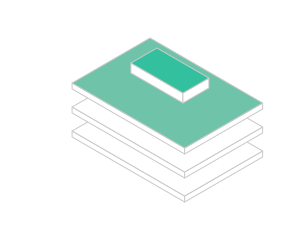

01 Board profiles
One file describes pins, memory and radios for each board.
One file describes pins, memory and radios for each board.

Unchanged parts are reused, so a second build takes seconds.

Send to a small group, watch it, then widen.